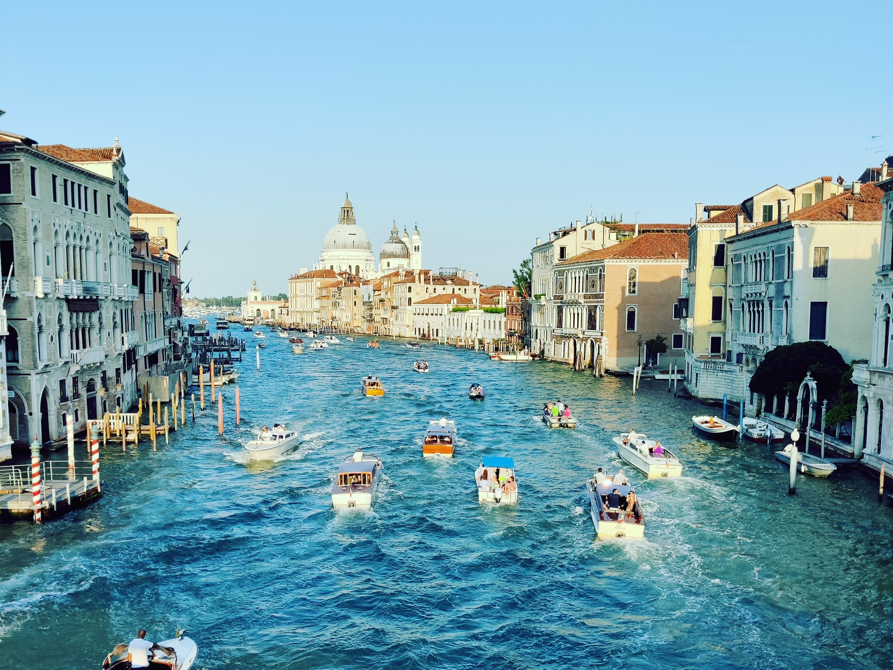

Exploring the regions of Italy
for a good cause.
Starting May 10th
My mission is to explore the Italian culture, nature, and people, while also collecting donations to brain cancer research. Join me!
~40
days on the road
~4000
km
Millions
of heartbeats